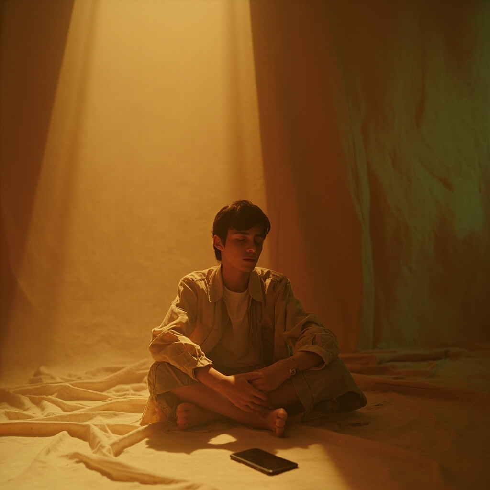
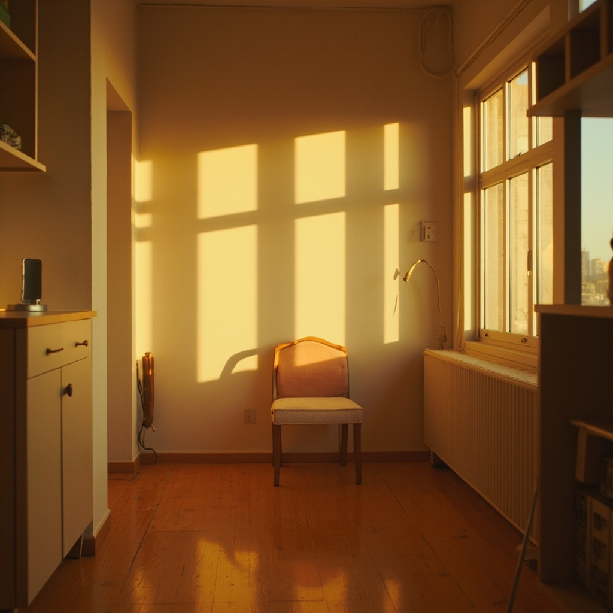
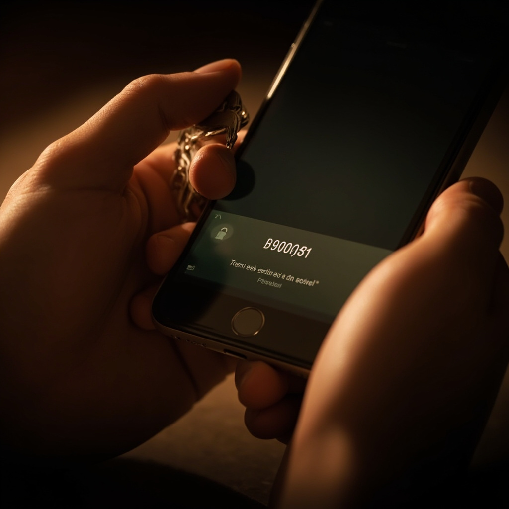
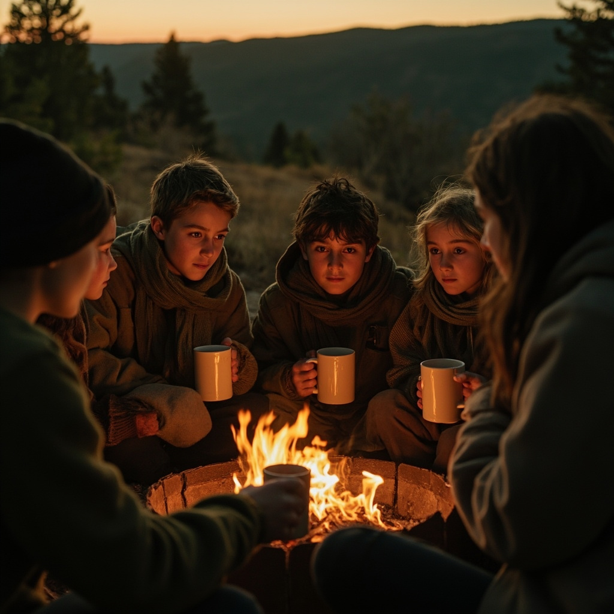
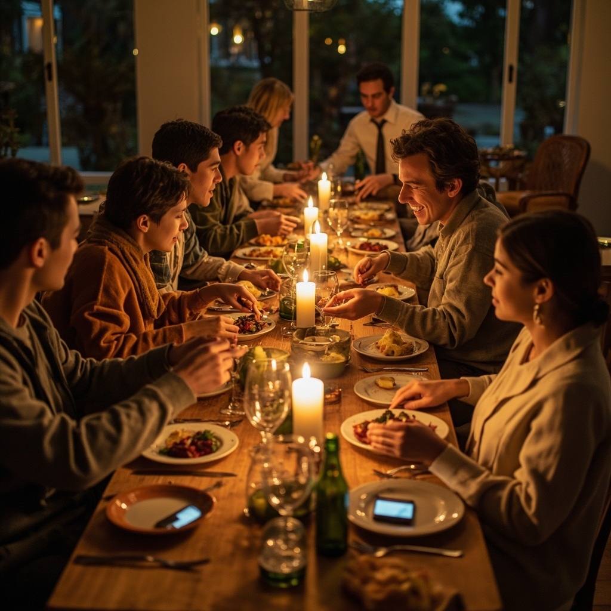
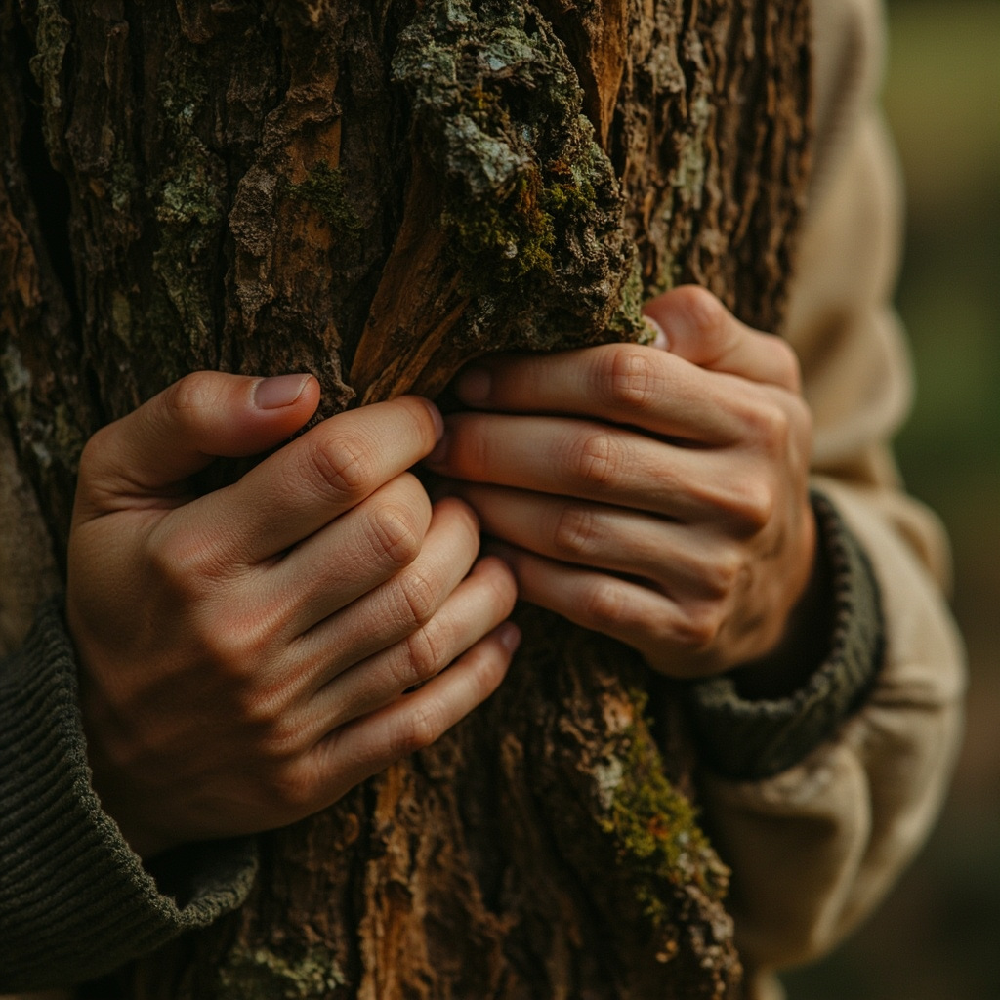
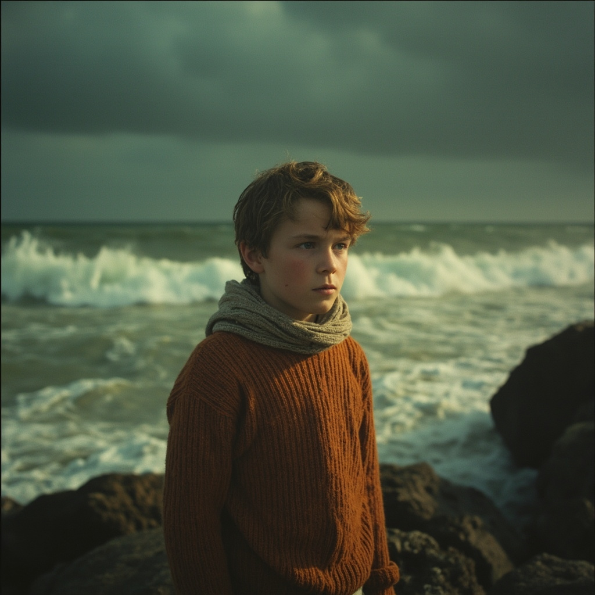

30 posts (10 X.com, 10 Facebook, 10 Instagram) with 30 MiniMax-generated images. Click any image to enlarge.
X.com10 posts

Post 1
Silence is not the absence of noise. It is the presence of yourself. The first of eight essentials in the onetoeight guide.
Read it:
https://mystic-jasper-abtb.here.now/
Post 2
UK adults now spend more than nine hours a day in front of a screen. Nine hours. The onetoeight guide is for anyone who suspects that is not alright.
Find out more:
https://mystic-jasper-abtb.here.now/

Post 3
Your neck has a memory, and it is keeping score. What does your body need that no app can provide? Chapter two of the onetoeight guide asks plainly.
Read it:
https://mystic-jasper-abtb.here.now/
Post 4
The most valuable skill of the next decade will not be coding. It will be the courage to put the phone down. Skills are the third essential.
Read the guide:
https://mystic-jasper-abtb.here.now/
Post 5
Algorithms know your insecurities before your own mother does. Digital self-defence is not paranoia. It is essential four.
See for yourself:
https://mystic-jasper-abtb.here.now/
Post 6
You have five hundred followers and no one to call at midnight. What is a community without presence? Chapter five of the onetoeight guide asks harder questions than your feed.
Read it:
https://mystic-jasper-abtb.here.now/
Post 7
Information has never been cheaper. Wisdom has never been rarer. Knowledge is the sixth essential, and it is not the same as a feed.
Find out more:
https://mystic-jasper-abtb.here.now/
Post 8
No software update has ever improved on a tree. Nature is essential seven, and it will not load any faster for you, however long you wait.
Read it in onetoeight:
https://mystic-jasper-abtb.here.now/
Post 9
You can scroll through a thousand opinions without forming a single one of your own. Convictions are the eighth and final essential.
Start here:
https://mystic-jasper-abtb.here.now/
Post 10
We did not grow up with screens. We grew up despite them. The onetoeight guide offers eight essentials for a generation that deserves better than doomscroll.
Start reading:
https://mystic-jasper-abtb.here.now/
Facebook10 posts
Post 1
Last weekend, I watched my niece hold a tablet like it was the most natural thing in the world. It stayed with me, and it sparked the idea behind onetoeight: eight essentials for a screen-born generation. It's a small, gentle guide for parents, carers and educators who want to keep something real alive alongside all the swiping. You can read it here: https://mystic-jasper-abtb.here.now/

Post 2
When was the last time you sat with your child and neither of you reached for a screen? The chapter on Silence in the onetoeight guide gently explores why boredom, stillness and daydreaming still matter, even now. Have a read here: https://mystic-jasper-abtb.here.now/

Post 3
It's so easy for childhood to drift indoors and onto the sofa these days. The Body chapter is a quiet nudge back: climbing, jumping, walking somewhere muddy, feeling a heartbeat after a proper sprint. It's not anti-screen, it's simply pro-body. Find it in the guide: https://mystic-jasper-abtb.here.now/
Post 4
If you'd like to gather a few friends and walk through onetoeight together, I'm running small, informal reading circles over the coming weeks. Nothing formal, just a chance to swap notes on bringing up a screen-born generation. Drop me a message if you'd like to join us, or start with the guide here: https://mystic-jasper-abtb.here.now/

Post 5
A friend told me her nine-year-old could recite the rules of three games but had never set a privacy setting. That stayed with me for days. The Digital Self-Defence chapter is about giving children practical skills, not just a few more hours in front of a screen. It's one of the eight essentials in the guide: https://mystic-jasper-abtb.here.now/
Post 6
Which ordinary life skill feels hardest to "fit in" alongside school, screens and sleep? Tying a knot, cooking something simple, fixing a puncture? The Skills chapter is a gentle reminder that these unhurried tasks are part of childhood too. Have a look here: https://mystic-jasper-abtb.here.now/
Post 7
There's knowing a fact because you looked it up, and there's knowing it because you lived with it. The Knowledge chapter celebrates the slow, layered kind of learning that an algorithm cannot really shortcut. I think it's changed how I think about homework. Read it here: https://mystic-jasper-abtb.here.now/
Post 8
The Convictions chapter isn't preachy, I promise. It's about helping a child find a few quiet "this is what I believe" moments, before the noise of the wider world fills in the gaps for them. I'd love to hear what values you've tried to pass on at home. Comment below, or read the guide here: https://mystic-jasper-abtb.here.now/
Post 9
We took the children to the same wood three weekends in a row, and something shifted on the third visit. They knew the tree with the bent branch. The Nature chapter is full of these small, ordinary observations that screens simply cannot hand over. Pick up the guide here: https://mystic-jasper-abtb.here.now/
Post 10
Eight essentials, one little guide, and plenty of room for your own ideas. If you're raising, teaching or simply caring about a child who arrived into a screen-first world, I'd love to know: which of the eight would you most like to start with? Share your thoughts below, or begin here: https://mystic-jasper-abtb.here.now/
Instagram10 posts

Post 1
Before the scroll, before the glow, there was something quieter worth keeping. Eight essentials for those who grew up with a screen in their hand. Begin here: https://mystic-jasper-abtb.here.now/
#onetoeight #screenborn #digitalwisdom #offlineculture
Post 2
A room without notifications, only the kettle, the rain, the clock on the wall. Silence is not the absence of sound but the presence of yourself. Link in bio.
#silence #quietmind #onetoeight #stillness #digitaldetox

Post 3
Feet on cold ground, breath in cold air, a heart beating faster than any app can measure. The body remembers what the screen forgets. Link in bio.
#bodymind #grounded #onetoeight #realskin #movement
Post 4
Hands that mend a hem, sharpen a blade, write a letter without autocorrect. Skills are the original software upgrade. Link in bio.
#realskills #craftsmanship #slowliving #onetoeight #handmade
Post 5
A locked door, a mind trained to look away. Defending yourself online begins long before you touch the screen. Link in bio.
#digitaldefence #mindfultech #attention #onetoeight #onlinesafety
Post 6
A table set for many, voices in the same room rather than the same thread. Community is built in person, not in pixels. Link in bio.
#community #reallife #belonging #onetoeight #togethers
Post 7
A book held open in a pool of lamplight. Knowledge stored in the mind cannot be switched off by a distant server. Link in bio.
#knowledge #reading #deeperthinking #onetoeight #learndeeply
Post 8
Old trees do not count their followers. Step outside and remember what has stood here far longer than any feed. Link in bio.
#nature #getoutside #wildandfree #onetoeight #reconnect
Post 9
A stance held when no one is watching. Convictions are the bones of a life, not the filter of a story. Link in bio.
#convictions #values #integrity #onetoeight #standfirm
Post 10
Eight essentials, one small guide, a generation that deserves more than a glass rectangle for a window. Pick it up at the link.
#onetoeight #screenborn #offlineguide #essentialreading #lifebeyondthethumb